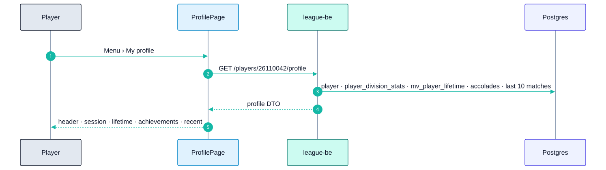
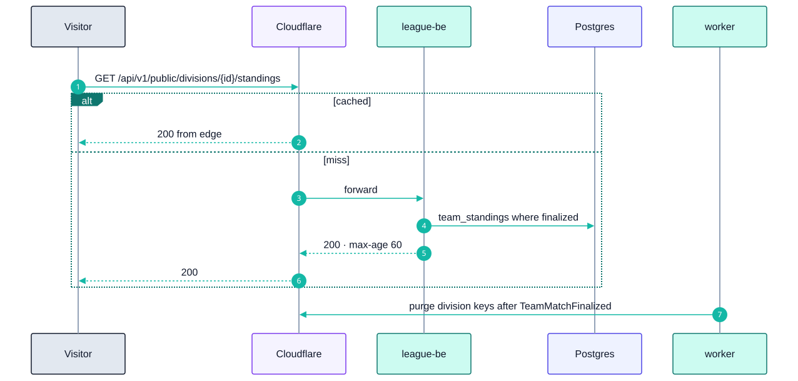

23 - Profile & Standings
Epic E10 · 2 features
| Goal | Players see their own record and achievements; everyone, signed in or not, sees division standings and results |
| Phase | 2 |
| Status | Target Not started. Phase 1 already computes player_division_stats and team_standings (E02-F8) and shows per-session stats in the roster (E03-F12) |
| Actors | Player, Captain, Public visitor |
| Related | 04 §12, §13 · 06 views · 08 §7 |
23.1 Features by phase
23.1.1 Phase 1
The data exists but no dedicated screen: roster rows show MW/MP and points for the session.
23.1.2 Phase 2
| # | Feature | Status |
|---|---|---|
| F34 | Player profile | Target |
| F35 | Public standings | Target |
23.2 Phase 2 deep dive
23.2.1 Where the numbers come from

23.2.2 Components

23.2.3 Data delta
| Object | Purpose |
|---|---|
mv_player_lifetime (player_id, format, mp, mw, win_pct, ds_avg, br, eob, nob, rackless, double_strike, last_played_at, mp_2y) |
Lifetime profile metrics |
team_standings view |
+ bonus, + tie-break columns (points, then match wins, then head-to-head) |
players.profile_visibility |
league (default) · public · private |
Public routes under /api/v1/public/* |
No cookie, no CSRF, cacheable, only public fields |
23.3 F34 — Player profile
| Phase | Status | Rules | Repo refs |
|---|---|---|---|
| 2 | Target | 04 §9, §12 | Phase 1 data: player_division_stats view, players_stats (E02-F8) |
23.3.1 Requirements
As a player, I open my profile and see my current SL per format, my record this session and overall, my achievements, and my recent matches.
| ID | Requirement |
|---|---|
| FR-34.1 | Route /players/:memberId; "My profile" in the header menu opens the signed-in user's own |
| FR-34.2 | Header: name, member ID, current SL per format, team(s) this session, paid status (own profile and admins only) |
| FR-34.3 | Session card (per division): MP, MW, Win % (2 decimals), total points, PPM, % points available (PA = 3 for 8-Ball, 20 for 9-Ball) |
| FR-34.4 | Lifetime card: MP, MW, Win %, DS average, matches in the last 2 years, last date played |
| FR-34.5 | Achievements: counters for BR, 8OB, 9OB, Rackless, Double-strike, with the date of the latest |
| FR-34.6 | Recent matches: last 10 individual matches with opponent, SLs, score (games or points/target), points, result chip; tap opens the night breakdown |
| FR-34.7 | SL history (own profile and admins): date, format, old → new, reason |
| FR-34.8 | Visibility: league (signed-in users) by default; the player can choose public or private (name and stats visible only to them and admins) |
| FR-34.9 | Forfeits are excluded from MP and Win % (04 §12) |
23.3.2 Logic: metric formulas
| Metric | Formula | Example (04 §12) |
|---|---|---|
| Win % | MW ÷ MP × 100 |
3 / 7 = 42.86 % |
| PPM | total points ÷ MP |
7 / 7 = 1.00 |
| % PA | total points ÷ (MP × PA) |
7 / 21 = 33 % |
| DS avg | Σ DS ÷ MP |
— |

23.3.3 Flow

23.3.4 API & data
json
{
"memberId": "26110042",
"name": "<player name>",
"skillLevels": [{ "format": "8_ball", "sl": 5 }],
"session": { "divisionId": "<division-uuid>", "mp": 7, "mw": 3, "winPct": 42.86, "points": 7, "ppm": 1.0, "pctPointsAvailable": 33.33 },
"lifetime": { "mp": 54, "mw": 29, "winPct": 53.7, "dsAvg": 0.8, "mpLast2y": 41, "lastPlayedAt": "2026-11-03" },
"accolades": { "BR": 2, "8OB": 1, "9OB": 0, "RACKLESS": 3, "DOUBLE_STRIKE": 0 },
"recent": []
}23.3.5 Edge cases
| ID | Situation | Expected |
|---|---|---|
| EC-34.1 | MP = 0 | Win %, PPM and % PA show "—", never NaN or 0 % |
| EC-34.2 | Player on two teams in different divisions | One session card per division |
| EC-34.3 | Lifetime view not yet refreshed after tonight | The session card is live; lifetime shows "Updated {time}" |
23.3.6 Acceptance criteria
- AC-34.1 Given 3 wins in 7 matches and 7 points in 8-Ball, then the session card shows 42.86 %, 1.00 and 33 %.
- AC-34.2 Given a private profile, when another player opens it, then stats are hidden.
23.3.7 Open questions
- Should lifetime stats include matches from before the app (paper records)?
23.4 F35 — Public standings
| Phase | Status | Rules | Repo refs |
|---|---|---|---|
| 2 | Target | R-110, R-140–R-145 · 04 §13 | Phase 1 data: team_standings view (E02-F8) |
23.4.1 Requirements
As anyone, players, friends or venue owners, I open a link and see the division table and every result, without signing in.
| ID | Requirement |
|---|---|
| FR-35.1 | Public routes /standings/:divisionId and /teams/:teamNumber that work without a session |
| FR-35.2 | Standings table: rank, team number + name, nights played, team points (including bonus), bonus, match wins, Win %. Sorted by points, then match wins, then head-to-head points |
| FR-35.3 | Results list per team, sorted by date (R-145): opponent, final score, date, venue; completed cards are green for the winner (R-140); upcoming cards show a blue date and time with the score hidden (R-141); bye and no-play are neutral, non-clickable (R-142) |
| FR-35.4 | Tapping a completed result opens the public night breakdown (R-144): totals with a crown, five match blocks with name, SL, LAG badge and games or points |
| FR-35.5 | Only nights in finalized or finalized_no_bonus count (E08); in Phase 1 mode, submitted |
| FR-35.6 | Public payloads never include emails, user IDs, paid status or private-profile stats (those players show as "Player {memberId}") |
| FR-35.7 | Cache-Control: public, max-age=60, stale-while-revalidate=300; Cloudflare caches it; a finalized night purges the division's keys (worker) |
| FR-35.8 | Share button uses the Web Share API with the canonical URL; Open Graph tags give a readable preview in Zalo/Facebook |
23.4.2 Logic: ranking

23.4.3 Flow

23.4.4 UI
| State | Shown |
|---|---|
| Loading | Table skeleton with 8 rows |
| Empty | "No results yet this session" |
| Unknown division | 404 page with a link to the schedule |
| ≥ 1024 px | Standings on the left, the selected team's results on the right |
23.4.5 Edge cases
| ID | Situation | Expected |
|---|---|---|
| EC-35.1 | A dispute is pending | That night isn't counted; the card shows "Under review" |
| EC-35.2 | Admin correction after finalize | Purge and recompute |
| EC-35.3 | A team withdraws mid-season | Kept in the table, marked "Withdrawn" (policy question) |
23.4.6 Acceptance criteria
- AC-35.1 Given no cookie, when the standings URL is opened, then the table renders.
- AC-35.2 Given a public payload, then it contains no
email,userIdorpaidfields (contract test). - AC-35.3 Given a newly finalized night, then the standings reflect it within 2 minutes.
23.4.7 Open questions
- Tie-break order: is head-to-head the league's rule?